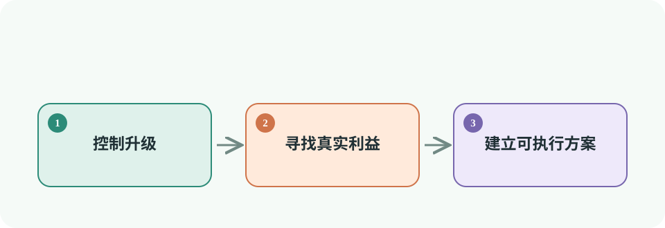
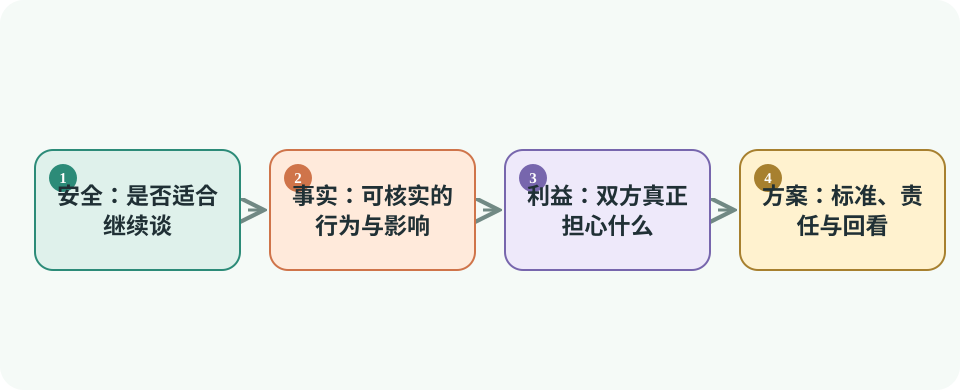

利益冲突：从立场对抗转向可执行协商
先降温和确认安全，再区分立场、利益、选项与客观标准
01 · 从一个具体问题开始
冲突中双方容易把注意力放在立场上：“我必须这样做”“你不能这样做”。立场越硬，越容易把问题变成对人的评价。利益可能不同于立场：一方要休息，另一方想放松。
先确认是否安全，再把人和问题分开，识别双方真正关切，生成选项并用客观标准比较，同时保留无法达成协议时的替代方案。
02 · 把方法拆成可观察的动作
面对利益分歧和公开提问，回到事实、听众需求、客观标准与行动落点。 这些动作是教学工具，不是必须逐字套用的公式。

控制升级
确认是否安全；若有威胁先退出。否则停止攻击性措辞并概括可核实事实。
寻找真实利益
问双方立场背后的关切：成本、尊严、安全、时间、风险；区分人和问题。
建立可执行方案
列选项、客观标准、各自替代方案（BATNA）、责任与回看节点。
03 · 多轮案例：回应怎样随着信息推进
邻里噪音案例适合练习低风险协商；不代表面对威胁或持续骚扰时仍应继续对话。
邻居噪音沟通
最近三晚十点后仍有明显低音，影响睡眠。
沟通目标：协商夜间安静时段。
声音有那么大吗？
最近三晚十点以后我这边还能明显听到低音，睡眠受影响。我不是来指责您，只想一起找个双方方便的办法。
我自己家还不能放音乐？
在自己家听音乐当然可以，我也尊重您的生活。问题是十点后的低音会传到隔壁，我们能否只调整晚间音量或低音设置？
示范回应用于观察结构，不是唯一正确答案。真实沟通应根据事实、关系和风险调整。

04 · 交互拆解：逐步检查每个动作
选择一个动作，观察它解决的具体问题。所有步骤默认都在页面中可读；按钮只是帮助你聚焦其中一层。
怎样把沟通原则变成下一句话
控制升级
确认是否安全；若有威胁先退出。否则停止攻击性措辞并概括可核实事实。
检查点：这一轮是否回应了对方刚刚提出的具体问题？
寻找真实利益
问双方立场背后的关切：成本、尊严、安全、时间、风险；区分人和问题。
检查点：这一轮是否回应了对方刚刚提出的具体问题？
建立可执行方案
列选项、客观标准、各自替代方案（BATNA）、责任与回看节点。
检查点：这一轮是否回应了对方刚刚提出的具体问题？
当前聚焦第 1 步。
05 · 常见失误与适用边界
- 在威胁、暴力或报复风险下仍然鼓励私下谈判。
- 把“双方各退一步”当成公平，不核对权力和风险差异。
- 只提出要求，不说明客观标准、替代方案或停止条件。
如果存在暴力、威胁、胁迫、自伤风险或明显权力滥用，不要把继续沟通或说服对方当成唯一任务；优先考虑现实安全、可信任的人和适当的专业支持。
06 · 把文章变成一次练习
从低风险、可逆的小分歧开始，先写双方各自的立场和可能利益，再提出两个可比较方案。
邻居噪音沟通
在训练页打开这道案例，先隐藏参考、逐轮作答，再做四维自评。
07 · 来源与说明
本文区分外部框架、项目教学改编和案例示范。引用只支持来源中明确涉及的概念，不代表本文所有表达步骤均经过实验验证。
- Harvard Program on Negotiation · Principled Negotiation · https://www.pon.harvard.edu/daily/negotiation-skills-daily/principled-negotiation-focus-interests-create-value/（Focus on interests and create value）
本文的案例、步骤顺序、互动拆解和四维自评属于言习课程设计。项目自评用于个人纵向复盘，不是经心理测量验证的量表，也不是任何机构的认证课程。